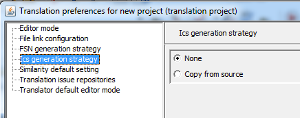

Defines how case significance wil be generated:

- None: ICS is false by default
- Copy from source: defines the default ICS as the same of the source FSN
- Words list: uses a list of case significant words for defining the default ICS.
This feature is not yet implemented in this version